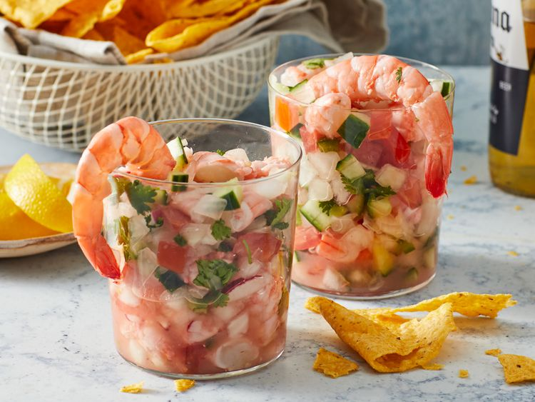

Ceviche

Description
Ceviche is made of diced bits of raw seafood, marinated in a lemon or lime juice concoction.
The acid in the citrus 'cooks' the fish until it becomes opaque and soaks in the flavor.
Ingredients
- Shrimp
- Cucumber
- Onion
- Tomatoes
- Fresh Herbs
- Lime
- Seasonings
- Jalapenos
- Tomato Juice
- Tortilla Chips
Steps
- Dice ingredients
- Combine
- Let sit in Fridge